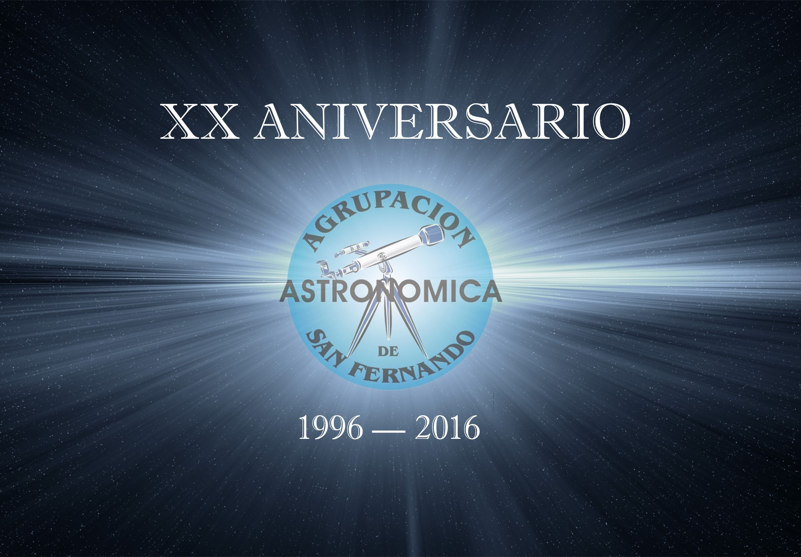
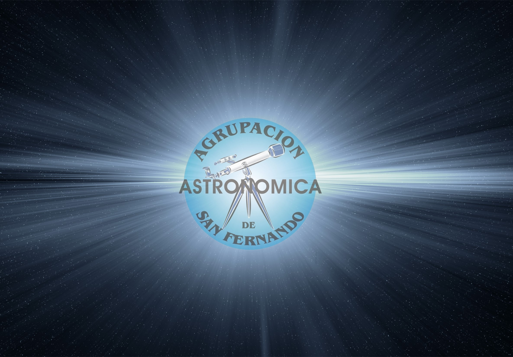
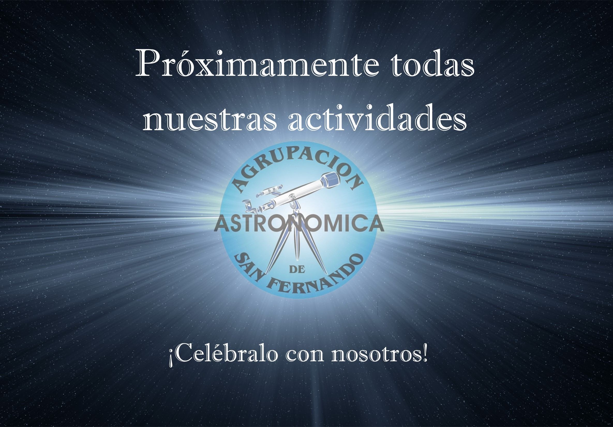

Calendario con todas nuestra Actividades
Real Instituto y Observatorio de la Armada
Observaciones Solar de nuestro Socio Fco. Jimenez
Inicio
Agrupación
Artículos
Historia
Systema Solar
Constelaciones
Contacto